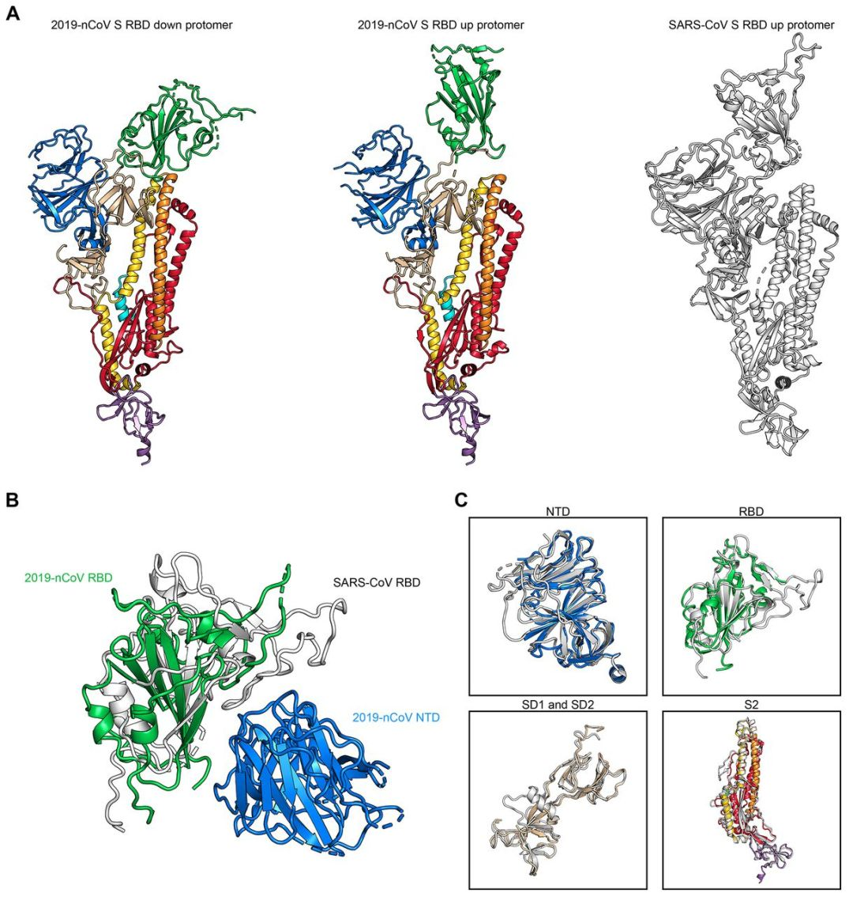
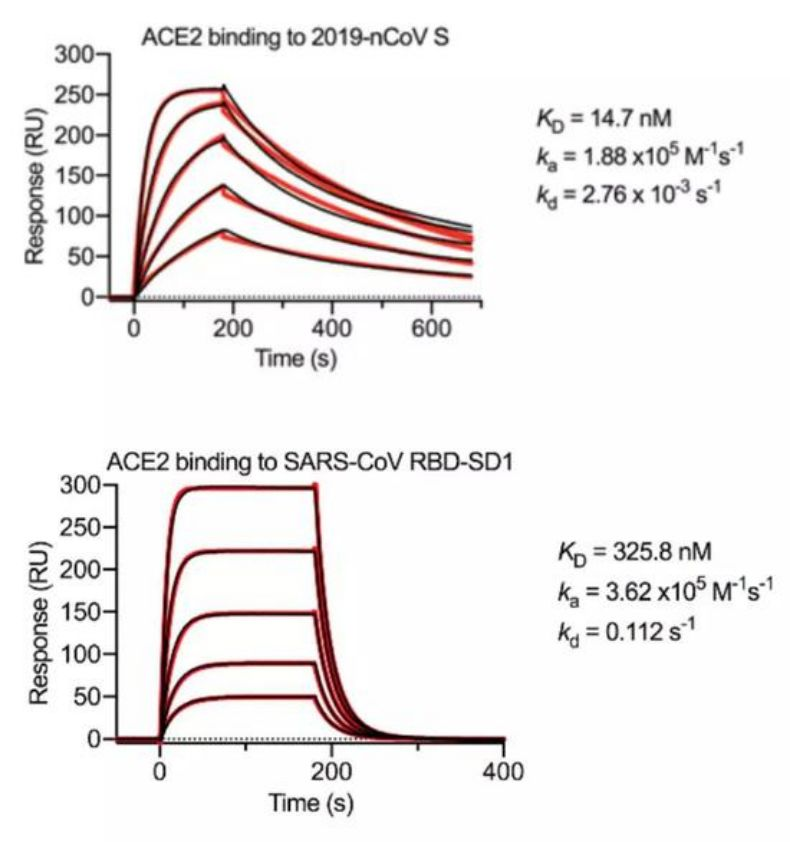
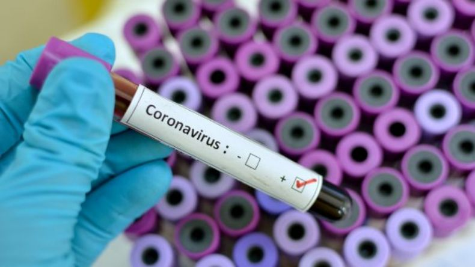

攻克新冠病毒离不开科研，最新进展有哪些
原文链接 备份链接 【财新网】（记者 周东旭）临床救治方案的优化和药物筛选、检测技术和产品、病毒病原学和流行病学、疫苗研发、动物模型构建是当前新冠肺炎科技攻关的五个主攻方向。2月15日，国务院联防联控机制举行发布会，介绍了科研最新进展。 …

昨日，Science 刊发了美国德克萨斯大学奥斯汀分校 Jason McLellan 团队的一篇关于新冠病毒的最新论文。该团队利用冷冻电镜技术解析出了新冠病毒 S 蛋白的超清结构。这一成果对开发疫苗和抗病毒药物有重要意义。
“当我们得知这是一种冠状病毒时，我们觉得必须马上采取行动，”McLellan 说，“因为我们可能是最早获得冠状病毒结构的人之一。我们确切知道要进行哪些突变，因为我们已经证明这些突变对其他一些冠状病毒也有效。”

图 | 新冠病毒 S 蛋白三聚体 3.5 埃的近原子分辨率结构（来源：论文）
新冠病毒受体亲和力远高于 SARS

因为新冠病毒与 SARS 病毒同属冠状病毒，且具有某些类似性，对这两种病毒的比较一直是科学家们研究的重点之一。
自从 SARS 爆发以后，冠状病毒的分子生物学及其入侵机制等方面的研究众多。
冠状病毒的后三分之一基因组主要编码结构蛋白，主要包括 S 蛋白(spike，S)、E 蛋白、M 蛋白和 N 蛋白。其中，S 蛋白主要通过与宿主细胞受体结合介导病毒的入侵，并决定病毒组织或宿主嗜性。
所以对 S 蛋白的研究是解释病毒入侵过程、进行病毒防控和抗病毒药物研发的重中之重。此前武汉病毒所石正丽团队研究证实了新型冠状病毒感染人体细胞的关键就在于 S 蛋白与 ACE2 蛋白的结合。

图 | 2019-nCoV 的 S 蛋白和 SARS-CoV 的 S 蛋白 之间的结构对比（来源：论文）
McLellan 团队研究人员利用冷冻电镜技术解析 S 蛋白后，利用表面等离子共振技术（SPR）分析了 S 蛋白与 ACE2 蛋白的亲和力。结果发现，人体 ACE2 蛋白与新型冠状病毒 S 蛋白结合的亲和力，比与 SARS 病毒 S 蛋白结合的亲和力高 10 到 20 倍。
从传染能力来看，新冠病毒明显高于 SARS 病毒。在前几日中国疾控中心发布的数据显示，新冠疾病的基本传染数（R0，即一个感染者平均感染其他人的人数）达 3.77，高于 SARS（0.85-3）。

图 | 新冠病毒（上）和 SARS 病毒（下）的 S 蛋白与 ACE2 的亲和力比较（来源：论文）
这项研究证实了新冠病毒更容易进入人体细胞，但论文称还需要进一步研究来检验这种可能性。
有专家在接受媒体采访时表示，病毒的传染性除了与进入细胞的难易程度有关之外，还与机体免疫力、病毒在细胞内的复制快慢等多种因素有关。因此，受体亲和力是 SARS 的 10 倍，并不意味着传染性也比 SARS 高 10 倍。
下一步：利用蛋白分子作“探针”
S 蛋白是新冠病毒感染机体的关键组分，也是研制新冠肺炎疫苗和抗体抑制剂的关键靶点。
此前，在不清楚新冠病毒 S 蛋白结构的情况下，新冠疫苗的研发大多基于预测结构，或者与新冠病毒相近的 SARS 病毒的蛋白结构。
了解新冠蛋白结构之后，就可以更精准地进行后续工作了。研究人员认为，他们得到的结构仅代表 S 蛋白的细胞外部分，但足以在人体内引发免疫反应，因此可以用于疫苗研发。

图 | 新冠病毒（来源：NIAID-RML）
威斯康星大学的蛋白质设计研究所一直处于蛋白质工程对抗疾病的前沿。该研究所在了解蛋白质的 3D 结构之后，可以创建适合这些蛋白质的 “locks” and “keys” ，以此促进分子相互作用或者阻止相互作用。
此前，该机构一直在试图寻找阻断新冠病毒的方法。他们正在开发一种可预防流感的“流感胶”（“Flu Glue” ），流感胶可以更好地与流感病毒外壳的蛋白质结合。最新的蛋白质结构有助于他们创造出相近的微蛋白。
此外，斯微生物、三叶草生物和 Moderna 的候选疫苗 mRNA-1273 也编码了 S 蛋白。
McLellan 团队的研究人员此前做了大量关于冠状病毒的研究，包括 SARS 病毒和 MERS 病毒，可谓经验丰富。不过该团队认为此次成功的关键在于低温电子显微镜（cryo-EM）的最新技术。
接下来，他们计划利用蛋白分子对新冠病毒进行另一种攻击：利用分子作为“探针”，从感染了新型冠状病毒并成功康复的患者身上分离自然产生的抗体。
如果数量足够大，这些抗体可以帮助治疗暴露后不久的病毒感染。
实用疫苗还需要更多时间
此篇论文在 2 月 17 日刚刚发布在预印版平台 bioRxiv 上，不到三天便在 Science 刊发，此过程通常需要几个月。
论文大部分工作由该论文共同一作 Daniel Wrapp 和王年爽完成。该团队在拿到病毒基因组仅两周便设计出蛋白样本，之后用 12 天重建了 3D 原子尺度结构图并提交了手稿。
尽管论文发表过程一路绿灯，但疫苗的研发还需要一些基本的流程和时间，这个时间不会很短。

图 | 从左到右：Daniel Wrapp，Jason McLellan 和王年爽（来源：mclellanlab.org）
此前，中国工程院院士、国家卫健委专家组成员李兰娟在接受央视采访时表示，新冠疫苗最快 3 个月就能拿出来。甲流疫苗单从获得疫苗株到批准上市就耗费了 87 天的时长，依照目前的技术和进展，3 个月时间够吗？
尽管目前我们知道了 S 蛋白的结构，但是研发疫苗仍然需要重复很多遍来确定最合适的点，这需要重复很多步骤。
“成功开发预防性或处理公共卫生危机的疫苗十分困难。 通常需要花上大量时间和金钱，”美国生物科技投资者 Brad Loncar 在接受 BBC 采访时说。
在研制出疫苗样品之后，还需要进行复杂的工艺研发、动物实验、临床实验、申报审批等多个步骤，之后才能获得国家药监局的批准用于具体的预防和治疗环节。另外，能否在短期内完成大批量的疫苗生产也是一个问题。
目前，国内公开宣布进行新冠病毒疫苗研发的企业已经达到 19 家之多，主要包括重组蛋白疫苗、DNA 疫苗和 mRNA 疫苗。其中由中科院牵头开展的重组蛋白疫苗项目已经进入到了动物实验阶段。
预计进入动物实验阶段的产品，最早将可能在 4 月中旬左右进入临床试验阶段。

（图源：pharmaphorum）
以下位国内外部分新冠疫苗研发动态汇编：
2 月 19 日，赛诺菲全球疫苗事业部赛诺菲巴斯德宣布，与美国生物医学高级研究与开发局（BARDA）合作，利用先进的基因重组技术平台加速开发新冠病毒疫苗。
2 月 18 日，广东腺病毒载体疫苗预计 2 月 28 日前开展动物实验。
2 月 15 日，科技部中国生物技术发展中心主任张新民介绍，当前部分疫苗品种已经进入动物实验阶段；冠昊生物称疫苗项目还在研发，距离上临床至少还要一年时间；康希诺生物正在尝试 mRNA 疫苗研发。
2 月 13 日，Inovio 声称已在美国圣地亚哥实验室的 DNA 药物平台开发研制出对抗新型冠状病毒的疫苗 INO-4800。据称，该公司在获得病毒基因序列后的 3 小时内设计出了疫苗；步长制药旗下的浙江天元生物药业有限公司正开展新冠肺炎疫苗的研发。
2 月 11 日，伦敦帝国理工学院完成全球首次新冠肺炎疫苗动物测试，已接种给小鼠；世界卫生组织总干事谭德塞在日内瓦表示，疫苗有望在 18 个月内准备就绪；强生宣布和 BARDA 合作开发新型冠状病毒疫苗。
2 月 10 日，Moderna 宣布针对新型冠状病毒的疫苗 mRNA-1273 已于 2 月 7 日完成第一批临床制造。
2 月 5 日，美国强生公司将利用其埃博拉疫苗平台——腺病毒载体平台研发新冠疫苗。该疫苗从研发到量产至少需要 8 个月。
2 月 3 日，英国大药厂葛兰素史克（GlaxoSmithKline，GSK）宣布加入全球研发新冠疫苗行列。
1 月 31 日，加拿大萨省大学开始研制新冠疫苗。
1 月 29 日，澳大利亚昆士兰大学研究人员拟运用 “分子钳” 专利技术快速生产新冠疫苗，该技术能够增加病毒蛋白的稳定性；安徽龙科马生物制药有限公司与中国科学院微生物研究所签订协议，基于后者已取得的相关技术秘密和经验，龙科马有意受让并进行后续产业化开发新冠病毒重组蛋白亚单位疫苗。
1 月 28 日，港大微生物学系宣称初步在喷鼻式流感疫苗基础上研发出新冠疫苗，未来可进行动物实验，明确疫苗的有效性和安全性，疫苗有望于 1 年内对人体展开临床测试；上海市东方医院转化医学平台与斯微生物合作推动新型冠状病毒 mRNA 疫苗研发。据称，这项技术可以在 40 天内完成大规模疫苗样品的生产和制备。
1 月 26 日，中国疾控中心病毒所所长许文波表示，该中心已启动新冠疫苗研发，目前已经成功分离病毒，正在筛选种子毒株。
1 月 23 日，美国卫生官员和科研人员在《美国医学会杂志》宣布：自 SARS 出现以来，医学界对冠状病毒的研究及技术进步（mRNA 技术）可大幅缩短新冠疫苗开发的时间，新冠候选疫苗有望在 3 个月后展开人体临床试验。
-End-
参考：
https://science.sciencemag.org/content/early/2020/02/19/science.abb2507
http://journals.im.ac.cn/html/wswxtbcn/2017/10/tb17102452.htm
https://www.sciencemag.org/news/2017/06/designer-protein-halts-flu
https://www.bbc.com/zhongwen/simp/science-51513859

原文链接 备份链接 【财新网】（记者 周东旭）临床救治方案的优化和药物筛选、检测技术和产品、病毒病原学和流行病学、疫苗研发、动物模型构建是当前新冠肺炎科技攻关的五个主攻方向。2月15日，国务院联防联控机制举行发布会，介绍了科研最新进展。 …
原文链接 备份链接 1月26日，中国疾控中心病毒病所表示，该中心已成功分离新冠疫苗病毒，正在筛选种子毒株。种子毒株的筛选是研发疫苗的第一步，全国十几家机构都在基于此争分夺秒地推进新冠疫苗的研发。 接受采访的研究者们表示，新冠疫苗需要跟时 …
原文链接 备份链接 【财新网】（记者 邸宁）疫情袭来，公众究竟要对新药和疫苗抱有怎样的期望？新冠疫情持续爬坡，目前尚无治愈药物，由各类机构和企业研发的“候选药物”、“候选疫苗”备受关注，然而，有效药物和疫苗的研发进程，或难以与公众的期望 …
原文链接 备份链接 【财新网】（记者 杨睿）新冠病毒的命名尚存争议。2月19日，国际顶级医学期刊《柳叶刀》在线发表了一篇由中国科学家撰写的通讯文章，呼吁给新冠病毒一个特定的名字。文章称，国际病毒分类委员会（ICTV）为新冠病毒所取 …
原文链接 备份链接 随着新冠肺炎（COVID-19）感染病例在近日突破 70,000 大关、中国疾控中心发迄今最大新冠病例分析、首次描述肺炎发病流行曲线，越来越多的新冠疫情爆发细节浮出水面。 与此同时，先前颇有群众基础的新冠病毒人为干预流 …